Kasaoka
Kasaoka · Okayama
Kasaoka
Highlighted on the Okayama map.
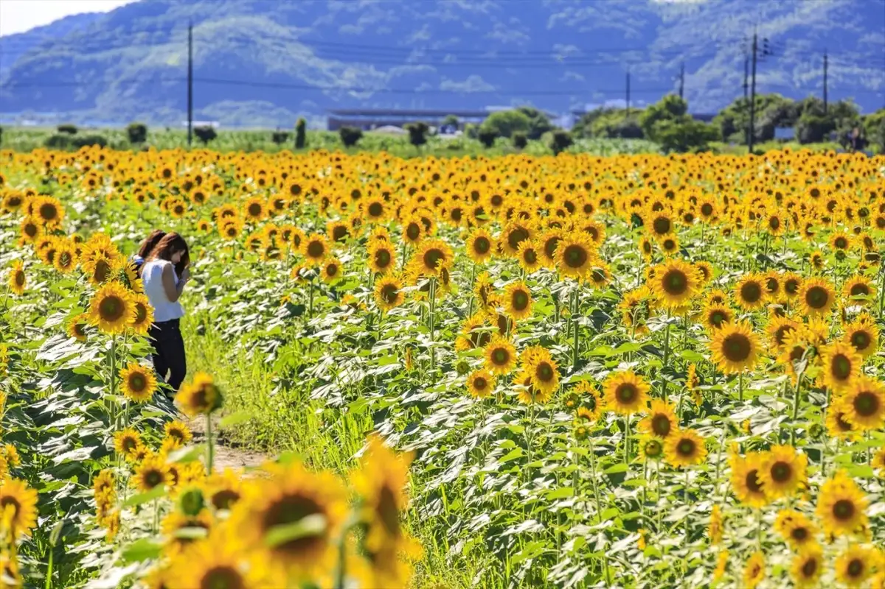
Stay
Shiroishi Shima Kokusaikoryu Vira
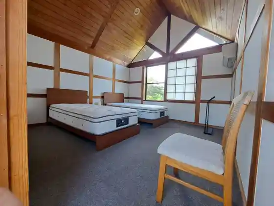
ZENTA SUITE
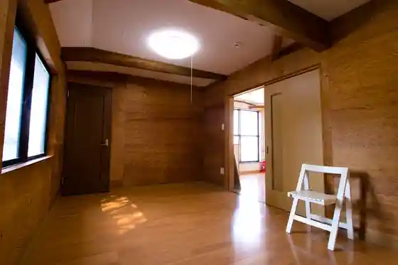
Guest House Shiraishi
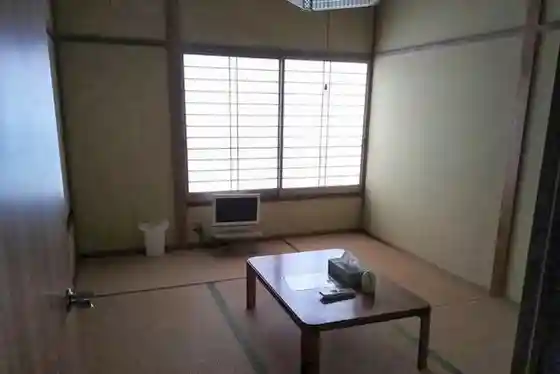
Ile d'or Cafe & Guesthouse
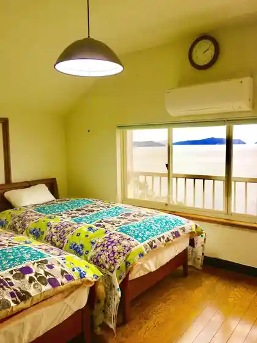
INN THE CAMP
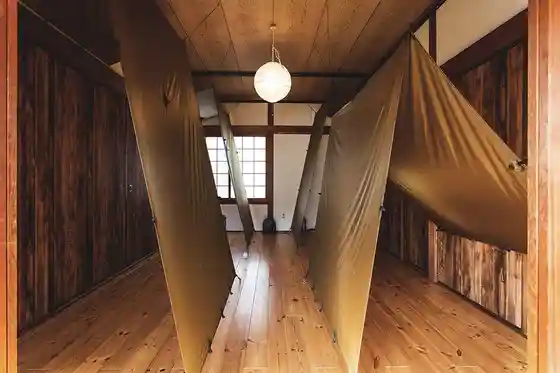
Amagi So
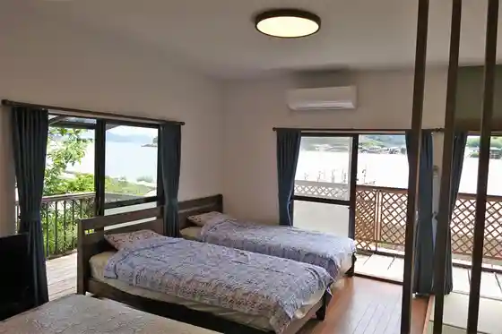
Tsuji Yo Ryokan
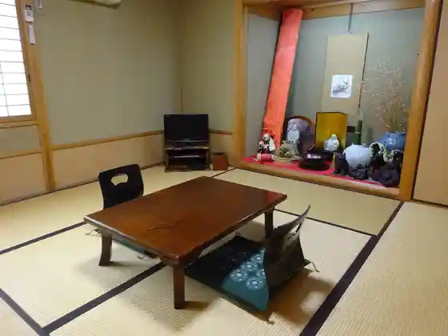
Kasaoka Gu Land Hotel
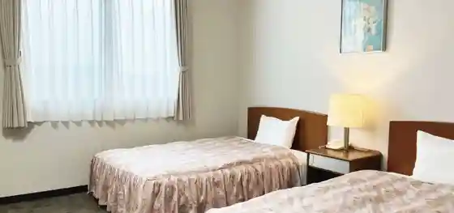
Shiroishi Shima Ryokan Hana Taiju
Dining
Kasaoka Oshima Bi no Hama Gyokyo Asa City
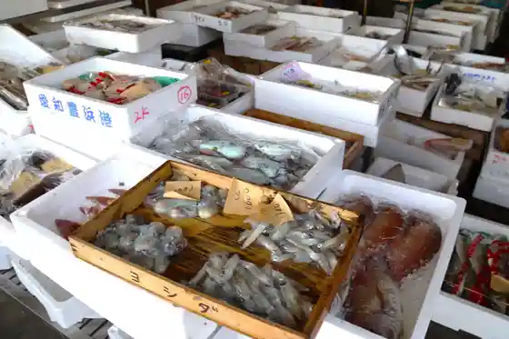
Oshima Bi no Hama Gyokyo Bi no Hama Shisho Asa City (Seto no City)
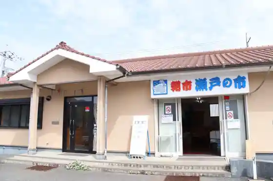
Kasaoka Fureai Aozora City Shiokaze
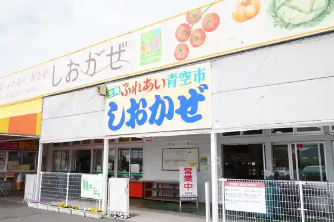
Experience
K's LABO (Kezurabo)
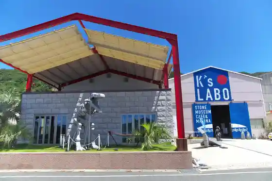
Shiawase Todoke Ruichigo Farm HappyComeCome
Kasaoka Rinrinsaikuru
Kasaoka Kanko Gaidoboranteia no Kai
Sutoroberii Farm Ishida
Isami Nagomi San
Sights
Kasaoka Wan Kantaku Chi no Hanahata
Kasaoka Ritsu Kabutogani Museum
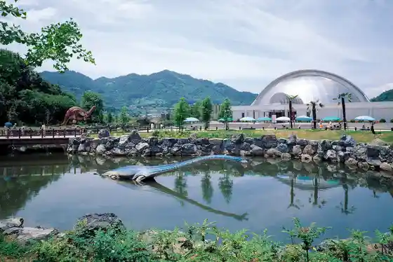
Roadside Station Kasaoka Bei Farm
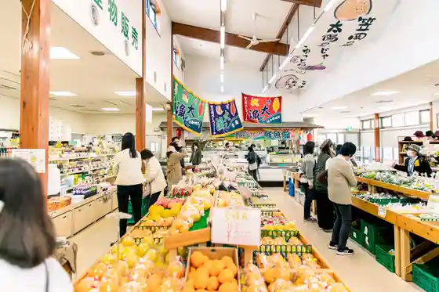
Kojo Yama Park
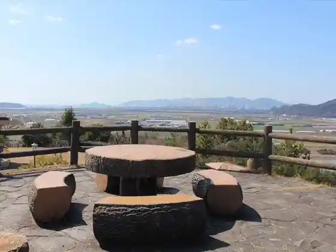
Shiroishi Shima